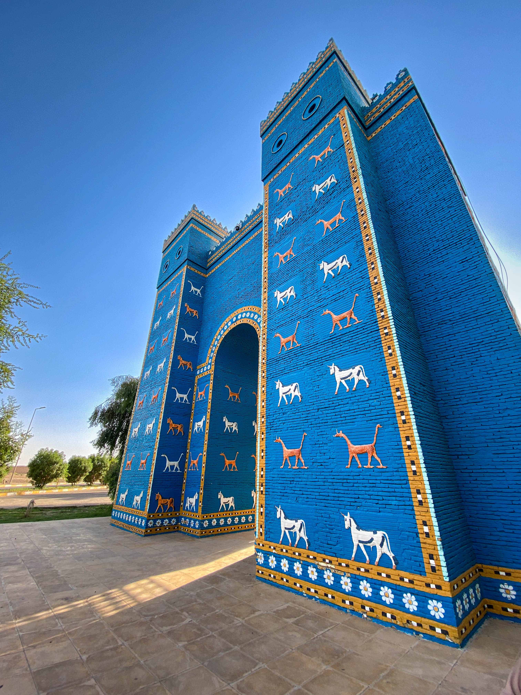

IRAQ
Iraq, officially the Republic of Iraq, is a country in Western Asia. It is bordered by Turkey to the north, Iran to the east, the Persian Gulf and Kuwait to the southeast, Saudi Arabia to the south, Jordan to the southwest and Syria to the west. The capital and largest city is Baghdad. Iraq is home to diverse ethnic groups including Iraqi Arabs, Kurds, Turkmens, Assyrians, Armenians, Yazidis, Mandaeans, Persians and Shabakis with similarly diverse geography and wildlife. The vast majority of the country's 44 million residents are Muslims – the notable other faiths are Christianity, Yazidism, Mandaeism, Yarsanism and Zoroastrianism.[12][2] The official languages of Iraq are Arabic and Kurdish; others also recognised in specific regions are Neo-Aramaic, Turkish and Armenian.
